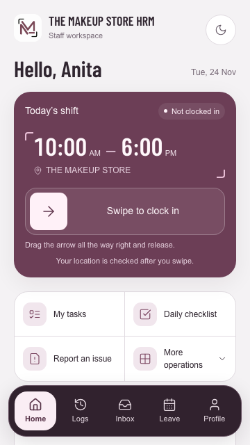
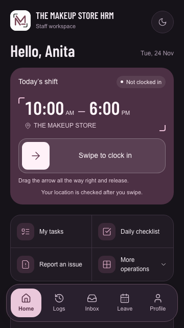

The employee workspace, redesigned
Typography and burgundy drawn from your existing identity, a compact tab dock, and one visual system across attendance, requests, forms and store operations.




Typography and burgundy drawn from your existing identity, a compact tab dock, and one visual system across attendance, requests, forms and store operations.

